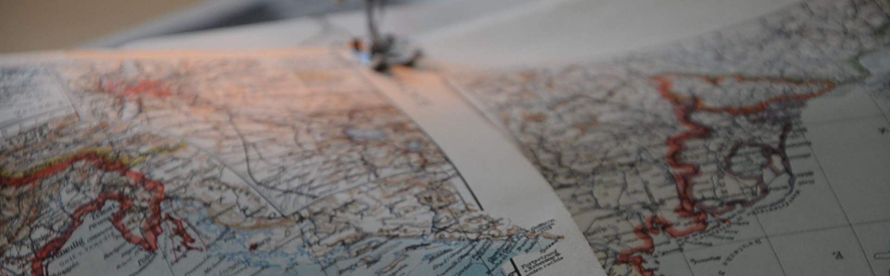
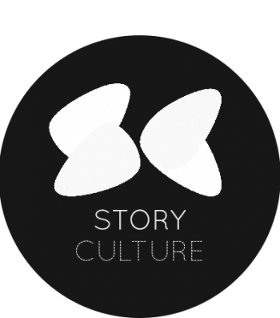

Theydon Boys
Back in early 2013, I have conceived a soulful electronic music project under the following brief:
Them theydon boys, lucky to have survived their first day at middle school, ridiculously bad at football and mediocre at Call of Duty. When they started supporting Chelsea, Mourinho was fired. They associate numbers with colours and get excited over ancient Greek poetry. If only they hadn't gone extinct in the Great Fire of 1666, you would've still met a couple of them on Stansted's benches trying to get some sleep, reading their copies of Neverwhere, and talking about their homeland, far away to the west, nested among the hilltops of Wales. Who has the money for train tickets these days, anyway.
Named after a mispronounced tube stop in East London, Theydon Boys is an electronic musician with unstoppable hatred for 80's synths and a severe samples deficiency. The desired product is music for the redundant generation.
Sound design & composition projects
My composition and sound design practice encompasses mainly two areas: first of all, I compose fixed pieces for media, performances and art installations. I'm also interested in the field of generative composition – i.e. creating pieces that are different everytime one listens to them, and evolve based on a ruleset rather than my mechanical input.
A betolakodó
/w David Somló for an Andaxínház theatre production in Budapest // recording, improvised performance, sound design (not in video)
Map series » a performance on colonialism
field recording // sound design // for performance and installation by Berlin-based playwright and performance artist Ana Mendes
commisioned by festival Chromoos, Gallery Dasmoosdorf
to premiere on May 23 2014

Das ist mein Gott | This is my God
Sound design for a set of short films by Ana Mendes
Growing Things
(in development) composition for electric guitar & generative system // based on genetic algorithms and Lindenmayer systems
to premiere in late April 2014 at Goldsmiths College
Ghosts
sound design, reactive composition // ongoing piece based on the disappearance of Amelia Earhart in the late 1930s. Exploring the relationship between events and interpretations via a reactive audio analysis system // intended as a sound installation
Waves
generative composition, electronic // my first year 2 composition at Goldsmiths // post-serialist piece attempting to juxtapose the ideas of pitch equality and invariant transformation to natural mechanisms of reverberation and material response // static recorded piece
Story Culture
I compose and produce royalty-free music for this exciting creative film agency.
